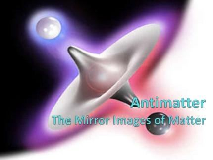
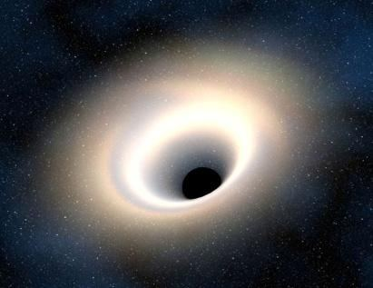
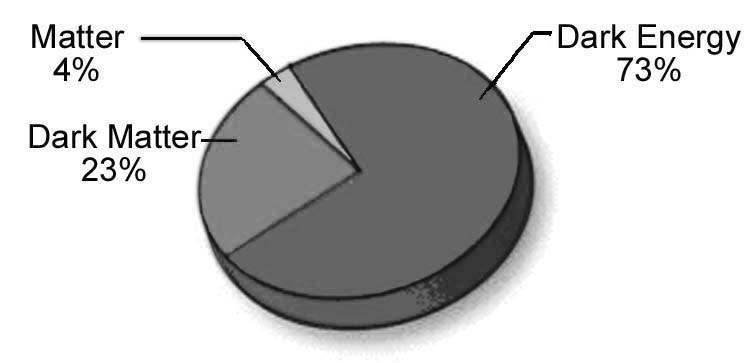

Sub-Section 8b: Creation of Jinn
উপ-ধারা 8b: জিনের সৃষ্টি
And the jinn race We had created before from the poisonous fire (nari i-samumi).
আর জিন জাতিকে আমি এর আগে সৃষ্টি করেছি বিষাক্ত আগুন থেকে (নারী ই-সামুমি)।
Remarks:
মন্তব্য:
Some jinns remain around us, but we neither see nor feel them. They cannot be detected by our instruments, which could be because they are creatures from another dimension. Most likely, the jinn are made of antimatter. Since antimatter is invisible to us, the jinn are also invisible. The above verse states that the jinn are created from 'poisonous fire' (nari I-samum). This 'poisonous fire' most likely refers to antimatter. Antimatter is the mirror image of baryonic (ordinary) matter, with particles that have opposite charges and properties. Both antimatter and baryonic matter are influenced by gravity in the same way. FIGURE 15.6: Matter and Antimatter, Mirror Image

চিত্র 15_6 / Figure 15_6
কিছু জিন আমাদের চারপাশে থাকে, কিন্তু আমরা তাদের দেখি না এবং অনুভব করি না। এগুলি আমাদের যন্ত্র দ্বারা সনাক্ত করা যায় না, এটি হতে পারে কারণ তারা অন্য মাত্রার প্রাণী। খুব সম্ভবত, জিনরা প্রতিপদার্থ দিয়ে তৈরি। যেহেতু প্রতিপদার্থ আমাদের কাছে অদৃশ্য, জ্বীনরাও অদৃশ্য। উপরের আয়াতে বলা হয়েছে যে জিনদের সৃষ্টি হয়েছে 'বিষাক্ত আগুন' (নারী ই-সামুম) থেকে। এই 'বিষাক্ত আগুন' সম্ভবত অ্যান্টিম্যাটারকে বোঝায়। অ্যান্টিম্যাটার হল ব্যারিওনিক (সাধারণ) পদার্থের মিরর ইমেজ, যেখানে বিপরীত চার্জ এবং বৈশিষ্ট্য রয়েছে। প্রতিপদার্থ এবং ব্যারিওনিক পদার্থ উভয়ই একইভাবে অভিকর্ষ দ্বারা প্রভাবিত হয়। চিত্র 15.6: ম্যাটার এবং অ্যান্টিম্যাটার, মিরর ইমেজ
চিত্র 15_6 / Figure 15_6
Antimatter interacts with matter upon contact, resulting in annihilation and the release of energy. However, such annihilation is not frequently observed in nature. Most likely, matter and antimatter is protected by some kinds of known and/or unknown force fields that prevent the direct collision under normal conditions. The existence of antimatter has been practically proven. Studies of cosmic rays have identified antiparticles, such as positrons and antiprotons.
অ্যান্টিম্যাটার যোগাযোগের সময় পদার্থের সাথে মিথস্ক্রিয়া করে, যার ফলে বিনাশ হয় এবং শক্তি মুক্তি পায়। যাইহোক, প্রকৃতিতে এই ধরনের ধ্বংস প্রায়শই পরিলক্ষিত হয় না। সম্ভবত, পদার্থ এবং প্রতিপদার্থ কিছু ধরণের পরিচিত এবং/অথবা অজানা বল ক্ষেত্র দ্বারা সুরক্ষিত থাকে যা স্বাভাবিক অবস্থায় সরাসরি সংঘর্ষ প্রতিরোধ করে। অ্যান্টিম্যাটারের অস্তিত্ব কার্যত প্রমাণিত হয়েছে। মহাজাগতিক রশ্মির গবেষণায় পজিট্রন এবং অ্যান্টিপ্রোটনের মতো প্রতিকণা চিহ্নিত করা হয়েছে।
FIGURE 15.8: The galaxy and the anti-galaxy Anti-Universe

চিত্র 15_8 / Figure 15_8
চিত্র 15.8: গ্যালাক্সি এবং অ্যান্টি-গ্যালাক্সি অ্যান্টি-ইউনিভার্স
চিত্র 15_8 / Figure 15_8
For every galaxy, there should be an invisible anti-galaxy, connected by black holes acting as doors. Both the galaxy and the anti-galaxy are held together by the same gravitational force.
প্রতিটি ছায়াপথের জন্য, একটি অদৃশ্য অ্যান্টি-গ্যালাক্সি থাকা উচিত, দরজা হিসাবে কাজ করে কালো গর্ত দ্বারা সংযুক্ত। গ্যালাক্সি এবং অ্যান্টি-গ্যালাক্সি উভয়ই একই মাধ্যাকর্ষণ শক্তি দ্বারা একসাথে আটকে থাকে।
FIGURE 15.11: Black Hole

চিত্র 15_11 / Figure 15_11
চিত্র 15.11: ব্ল্যাক হোল
চিত্র 15_11 / Figure 15_11
Thus, the universe is a two-in-one system; an invisible anti-universe exists alongside our universe. The jinns are the predominant creatures of the anti-universe, and they are intelligent beings. This universe (Samawaat) is basically created for the anti-creatures. In the universe, there should be more antimatter than ordinary (baryonic) matter.
সুতরাং, মহাবিশ্ব একটি টু-ইন-ওয়ান সিস্টেম; আমাদের মহাবিশ্বের পাশাপাশি একটি অদৃশ্য বিরোধী মহাবিশ্ব বিদ্যমান। জিনরা মহাবিশ্ব বিরোধী প্রধান প্রাণী এবং তারা বুদ্ধিমান প্রাণী। এই মহাবিশ্ব (সামাওয়াত) মূলত সৃষ্টি হয়েছে বিরোধী জীবের জন্য। মহাবিশ্বে, সাধারণ (ব্যারিওনিক) পদার্থের চেয়ে বেশি প্রতিপদার্থ থাকা উচিত।
Dark Matter may be Antimatter
ডার্ক ম্যাটার অ্যান্টিম্যাটার হতে পারে
The data collected by WMAP (Wilkinson Microwave Anisotropy Probe) shows that the universe contains about six times more dark matter than matter. The objects of a rotating galaxy would fly apart if there were no dark matter to increase the gravitational force strong enough to hold the galaxy together. Dark matter does not interact with electromagnetic forces, meaning it doesn't emit, absorb, or reflect light, making it invisible and detectable only through its gravitational effects. Dark matter is theorized to account for the additional gravitational forces observed in galaxies and galaxy clusters.
WMAP (উইলকিনসন মাইক্রোওয়েভ অ্যানিসোট্রপি প্রোব) দ্বারা সংগৃহীত তথ্য দেখায় যে মহাবিশ্বে পদার্থের চেয়ে প্রায় ছয় গুণ বেশি অন্ধকার পদার্থ রয়েছে। একটি ঘূর্ণায়মান ছায়াপথের বস্তুগুলি উড়ে যেত যদি গ্যালাক্সিকে একসাথে ধরে রাখার মতো যথেষ্ট শক্তিশালী মহাকর্ষ বল বাড়ানোর মতো অন্ধকার পদার্থ না থাকে। ডার্ক ম্যাটার ইলেক্ট্রোম্যাগনেটিক ফোর্সের সাথে ইন্টারঅ্যাক্ট করে না, যার অর্থ এটি আলোকে নির্গত করে না, শোষণ করে না বা প্রতিফলিত করে না, এটি শুধুমাত্র তার মহাকর্ষীয় প্রভাবের মাধ্যমে অদৃশ্য এবং সনাক্তযোগ্য করে তোলে। গ্যালাক্সি এবং গ্যালাক্সি ক্লাস্টারে পরিলক্ষিত অতিরিক্ত মহাকর্ষীয় শক্তির জন্য অন্ধকার পদার্থকে তাত্ত্বিকভাবে বিবেচনা করা হয়।
FIGURE 15.7: Matter and Dark Matter

চিত্র 15_7 / Figure 15_7
চিত্র 15.7: ম্যাটার এবং ডার্ক ম্যাটার
চিত্র 15_7 / Figure 15_7
Dark matter and antimatter are two distinct concepts in physics. However, the concept of physics is not the limit of thought. From the religious perspective, the universe is considered an anti-universe, essentially created for anti-creatures like jinn and their supporting entities living in anti-galaxies. Dark matter may be antimatter, protected by known and/or unknown force fields.
ডার্ক ম্যাটার এবং অ্যান্টিম্যাটার পদার্থবিদ্যার দুটি স্বতন্ত্র ধারণা। যাইহোক, পদার্থবিদ্যার ধারণা চিন্তার সীমা নয়। ধর্মীয় দৃষ্টিকোণ থেকে, মহাবিশ্বকে একটি মহাবিশ্ব-বিরোধী হিসাবে বিবেচনা করা হয়, যা মূলত জ্বীনের মতো বিরোধী প্রাণী এবং অ্যান্টি-গ্যালাক্সিতে বসবাসকারী তাদের সহায়ক সত্তার জন্য তৈরি করা হয়েছে। ডার্ক ম্যাটার অ্যান্টিম্যাটার হতে পারে, পরিচিত এবং/অথবা অজানা বল ক্ষেত্র দ্বারা সুরক্ষিত।
Sub-Section 8c: Root of Rivalry
উপ-ধারা 8c: প্রতিদ্বন্দ্বিতার মূল
Behold! Your Lord said to the angels: "I am about to create a man from the 'sauce of black-mud altered' (amino acid); when I have fashioned him and breathed into him of My soul (ruh), fall down prostrating yourselves unto him." So, the angels prostrated themselves, all of them together. Not so Iblis (Satan); he refused to be among those who prostrated themselves. Said: "O Iblis, what is your reason for not being among those who prostrated themselves?" Said: "I am not one to prostrate myself to man whom You did create from the 'sauce of black-mud altered' (amino acid)." Said: "Then get you out from here; for you are rejected, accursed, and the curse shall be on you till the Day of Judgment." Said: "O my Lord, give me then respite till the Day the (dead) are raised." Said: "Respite is granted you till the Day of the Time appointed." Said: "O my Lord, because You have put me in the wrong I will make fair-seeming to them on the earth, and I will put them all in the wrong, except Your servants among them sincere and purified." Said: "This is indeed a way that leads straight to Me. For, over My servants no authority shall you have, except such as put themselves in the wrong and follow you."
দেখো! তোমার রব ফেরেশতাদের বললেন: "আমি 'কাদা-কাদার পরিবর্তিত সস' (অ্যামিনো অ্যাসিড) থেকে একজন মানুষকে সৃষ্টি করতে যাচ্ছি; যখন আমি তাকে রূপ দেব এবং তার মধ্যে আমার রূহ (রহঃ) ফুঁক দেব, তখন তোমরা তাকে সেজদা করে পড়ো।" তাই, ফেরেশতারা সবাই মিলে সিজদা করল। তাই নয় ইবলিস (শয়তান); সে সেজদাকারীদের অন্তর্ভুক্ত হতে অস্বীকার করেছিল। বললেনঃ হে ইবলিস, সেজদাকারীদের অন্তর্ভুক্ত না হওয়ার কারণ কি? বলেছেন: "আমি সেই মানুষকে সেজদা করার মতো নই যাকে তুমি 'কালো-কাদার পরিবর্তিত সস' (অ্যামিনো অ্যাসিড) থেকে সৃষ্টি করেছ।" বললেন: "তাহলে তোমাকে এখান থেকে বের করে দাও; কেননা তুমি প্রত্যাখ্যাত, অভিশপ্ত এবং বিচার দিবস পর্যন্ত তোমার উপর অভিশাপ থাকবে।" বললঃ হে আমার রব, অতঃপর আমাকে (মৃতদের) পুনরুত্থিত হওয়ার দিন পর্যন্ত অবকাশ দিন। বললেনঃ নির্ধারিত সময়ের দিন পর্যন্ত তোমাকে অবকাশ দেয়া হয়েছে। বললেন, হে আমার পালনকর্তা, তুমি আমাকে ভুলের মধ্যে ফেলেছ বলে আমি পৃথিবীতে তাদের কাছে সুন্দর করে দেব এবং আমি তাদের সবাইকে অন্যায়ের মধ্যে ফেলব, তাদের মধ্যে তোমার খাঁটি ও পবিত্র বান্দা ছাড়া। বলেছেন: "এটি এমন একটি পথ যা সরাসরি আমার দিকে নিয়ে যায়। কেননা, আমার বান্দাদের উপর তোমার কোন কর্তৃত্ব থাকবে না, যারা নিজেদের ভুল করে এবং তোমাকে অনুসরণ করে।"
Remarks
মন্তব্য
Azazil, a jinni, became zealous and haughty and refused to prostrate before Adam. He obtained permission from God to prove his claim that Adam was not a suitable vicegerent of God and that he could be easily misled. Azazil, now known as Iblis, has many follower jinns, each assigned to mislead a specific human. How the jinni mislead a human is discussed below: 8cI. Watching
আজাযিল, একটি জিনি, উদ্যমী এবং উদ্ধত হয়ে ওঠে এবং আদমকে সেজদা করতে অস্বীকার করে। তিনি তার দাবী প্রমাণ করার জন্য ঈশ্বরের কাছ থেকে অনুমতি পেয়েছিলেন যে আদম ঈশ্বরের উপযুক্ত উপাসক ছিলেন না এবং তাকে সহজেই বিভ্রান্ত করা যেতে পারে। আজাজিল, বর্তমানে ইবলিস নামে পরিচিত, এর অনেক অনুসারী জ্বীন রয়েছে, যাদের প্রত্যেককে নির্দিষ্ট মানুষকে বিভ্রান্ত করার জন্য নিযুক্ত করা হয়েছে। জিনি কিভাবে একজন মানুষকে বিভ্রান্ত করে তা নিচে আলোচনা করা হলো: 8cI। দেখছি
Jinns exist in the space of different dimensions. But, due to the nature of their existence, they can observe us. For this reason, they are referred to as 'Watchers':
বিভিন্ন মাত্রার মহাকাশে জ্বীনের অস্তিত্ব রয়েছে। কিন্তু, তাদের অস্তিত্বের প্রকৃতির কারণে, তারা আমাদের পর্যবেক্ষণ করতে পারে। এই কারণে, তাদের 'প্রহরী' হিসাবে উল্লেখ করা হয়:
―… he and his tribe watch you from a position where ye cannot see them…‖ [Al Quran 7:27]
- সে এবং তার গোত্র এমন অবস্থান থেকে তোমাকে দেখছে যেখান থেকে তুমি তাদের দেখতে পাবে না..." [আল কুরআন 7:27]
A human also has the ability to see a jinni, known as third-eye vision, which is the vision through the nafs (the main soul). This third-eye vision is not typically developed during one's earthly life. However, if a man deeply senses the presence of a demonic creature in a place, his perception might be correct.
একজন মানুষের একটি জিন্নি দেখার ক্ষমতাও রয়েছে, যাকে তৃতীয় চোখের দৃষ্টি বলা হয়, যা নফসের (প্রধান আত্মা) মাধ্যমে দর্শন। এই তৃতীয় চোখের দৃষ্টি সাধারণত একজনের পার্থিব জীবনের সময় বিকশিত হয় না। যাইহোক, যদি একজন মানুষ গভীরভাবে একটি জায়গায় একটি পৈশাচিক প্রাণীর উপস্থিতি অনুভব করে, তার উপলব্ধি সঠিক হতে পারে।
8cII. Whispering
8cII। ফিসফিস করে
Jinns can whisper into our minds:
জিনরা আমাদের মনে ফিসফিস করে বলতে পারে:
―But Satan (the chief jinni) whispered evil to him: he said, "O Adam! Shall I lead thee to the tree of eternity and to a kingdom that never decays?" [Al Quran 20:120]
কিন্তু শয়তান (প্রধান জিনি) তাকে কুমন্ত্রণা দিল: সে বলল, "হে আদম! আমি কি তোমাকে অনন্তকালের বৃক্ষের দিকে এবং এমন রাজ্যের দিকে নিয়ে যাব যা কখনো ক্ষয় হয় না?" [আল কুরআন 20:120]
―Then began Satan to whisper suggestions to them, bringing openly before their minds all their shame that was hidden from them. He said, "Your Lord only forbade you this tree lest ye should become angels or such beings as live forever." [Al Quran 7:20] ―Say: I seek refuge with the Lord and Cherisher of mankind, the King of mankind, the God of mankind from the mischief of the whisperer (a satan jinni) who withdraws‖ [Al Quran 114: 1-4]
-অতঃপর শয়তান তাদের কাছে ফিসফিস করতে শুরু করল, তাদের মনের সামনে তাদের সমস্ত লজ্জা প্রকাশ করে যা তাদের কাছ থেকে গোপন ছিল। তিনি বললেন, তোমার প্রতিপালক শুধু তোমাকে এই বৃক্ষ নিষেধ করেছেন, যাতে তুমি ফেরেশতা না হয়ে যাও অথবা চিরকাল বেঁচে থাকা প্রাণী হয়ে যাও। [আল কোরান 7:20] - বলুন: আমি মানবজাতির পালনকর্তা ও পালনকর্তা, মানবজাতির রাজা, মানবজাতির ঈশ্বরের কাছে আশ্রয় প্রার্থনা করছি ফিসফিসকারী (একটি শয়তান জিন্নি) এর ফিতনা থেকে, যে প্রত্যাহার করে" [আল কুরআন 114: 1-4]
The process by which a jinni can whisper into a human‘s mind is discussed below: A human has a superimposed soul, called the ruh (an unknown elementary force field), which spreads in the chest. The ruh, with the support of certain chest muscles, nerves, and the brain, produces a virtual brain extending into the chest, which is perceived as the mind (qalb). The ruh has two inherent emotions—sorrow and joy—that inspire the brain to select a thought to run. The nafs is the primary soul of a human. It is a combination of unknown force fields (not yet discovered) that spread throughout the body, with its center located below the navel. The force fields of the nafs encompass other human emotions, such as love, hatred, fear, disgust, and so forth. The nafs has vital points (chakras) within the body. The nafs is connected to the mind (qalb) through a vital point in the chest. Antimatter affects gravitational force; similarly, the whisper of a jinni, which should form out of antimatter, can influence some of the force fields of a human's nafs. This interaction creates sensations in the nafs, which then inspire to initiate thoughts in the mind. The physical brain either vitalizes or suppresses these thoughts, based on knowledge and/or the inspiration of the ruh such as sorrow and joy. The brain constantly generates various thoughts, making it difficult to determine which ones are instigated by a satanic jinni.
যে প্রক্রিয়ার মাধ্যমে একজন জিনি মানুষের মনে ফিসফিস করতে পারে তা নীচে আলোচনা করা হয়েছে: একজন মানুষের একটি অতিপ্রাণিত আত্মা আছে, যাকে বলা হয় রুহ (একটি অজানা প্রাথমিক শক্তি ক্ষেত্র), যা বুকের মধ্যে ছড়িয়ে পড়ে। বুকের নির্দিষ্ট পেশী, স্নায়ু এবং মস্তিষ্কের সমর্থনে রুহ একটি ভার্চুয়াল মস্তিষ্ক তৈরি করে যা বুকের মধ্যে বিস্তৃত হয়, যা মন (ক্বালব) হিসাবে অনুভূত হয়। রুহের দুটি অন্তর্নিহিত আবেগ রয়েছে - দুঃখ এবং আনন্দ - যা মস্তিষ্ককে দৌড়ানোর জন্য একটি চিন্তা নির্বাচন করতে অনুপ্রাণিত করে। নফস হলো মানুষের প্রাথমিক আত্মা। এটি অজানা বল ক্ষেত্রগুলির সংমিশ্রণ (এখনও আবিষ্কৃত হয়নি) যা সারা শরীরে ছড়িয়ে পড়ে, যার কেন্দ্রটি নাভির নীচে অবস্থিত। নফসের শক্তি ক্ষেত্রগুলি অন্যান্য মানবিক আবেগকে অন্তর্ভুক্ত করে, যেমন প্রেম, ঘৃণা, ভয়, ঘৃণা ইত্যাদি। নফসের শরীরের মধ্যে গুরুত্বপূর্ণ পয়েন্ট (চক্র) রয়েছে। নফস বুকের একটি গুরুত্বপূর্ণ বিন্দুর মাধ্যমে মনের (ক্বালব) সাথে সংযুক্ত। প্রতিপদার্থ মহাকর্ষীয় বলকে প্রভাবিত করে; একইভাবে, জিন্নির ফিসফিস, যা অ্যান্টিম্যাটার থেকে তৈরি হওয়া উচিত, মানুষের নফসের কিছু বল ক্ষেত্রকে প্রভাবিত করতে পারে। এই মিথস্ক্রিয়া নফসে সংবেদন সৃষ্টি করে, যা তখন মনের মধ্যে চিন্তার সূচনা করতে অনুপ্রাণিত করে। শারীরিক মস্তিষ্ক জ্ঞান এবং/অথবা দুঃখ এবং আনন্দের মতো রুহের অনুপ্রেরণার উপর ভিত্তি করে এই চিন্তাগুলিকে প্রাণবন্ত করে বা দমন করে। মস্তিষ্ক ক্রমাগত বিভিন্ন চিন্তাভাবনা তৈরি করে, কোনটি শয়তানী জিন্নি দ্বারা প্ররোচিত তা নির্ধারণ করা কঠিন করে তোলে।